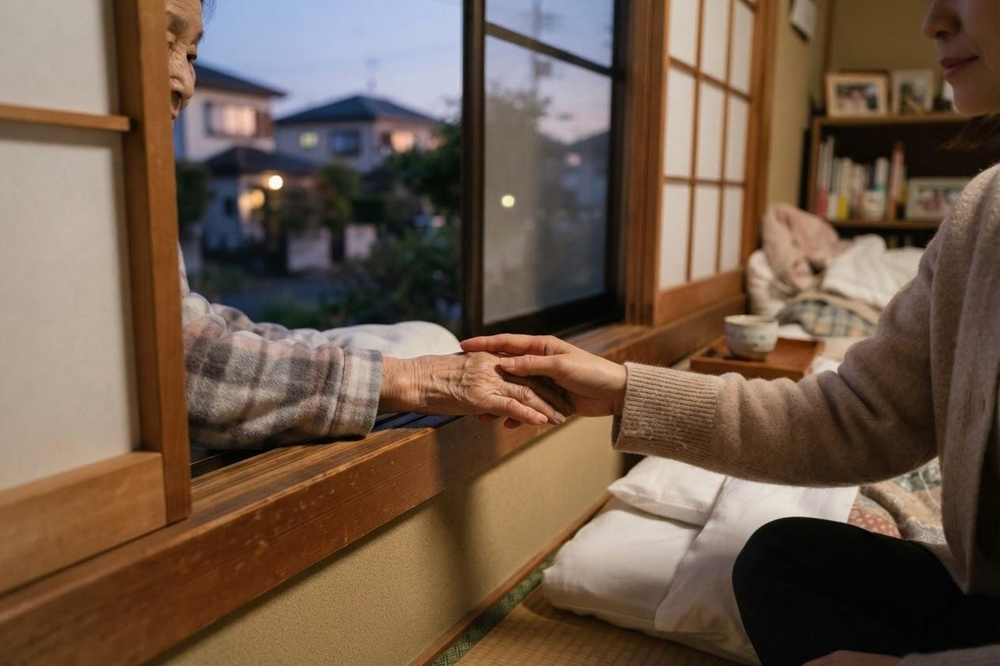

自宅で最期まで過ごすことはできますか？
A. 回答できる場合が多くあります。訪問診療と訪問看護が入り、必要な介護サービスが組み合わされていれば、ご自宅で過ごしていただくことは可能です。ただし、ご家族の負担がゼロになるわけではありません。だからこそ、初めから「絶対に自宅で」と決めきらず、途中で方針を変えてよいという前提で始めることをおすすめしています。当院では訪問診療・訪問看護を行っており、看取りにも対応しています。

自宅で過ごすために必要なもの
- 訪問診療：医師が定期的に訪問し、状態を確認します。痛みや息苦しさをやわらげる対応もここで行います。
- 訪問看護：看護師が訪問し、日々の状態を看ます。夜間に連絡できる体制があることが、ご家族の安心につながります。
- 介護サービス：ヘルパーによる介助、介護ベッドなどの福祉用具、必要に応じて訪問入浴。
- ご家族の体制：どなたがどの時間を担うか。すべてを一人が背負う形は続きません。
- 急なときの連絡先：「何かあったらどこへ電話するか」が決まっていることが、いちばんの支えになります。
ご家族が不安に感じやすいこと
| ご心配 | 実際のところ |
|---|---|
| 苦しむのではないか | 痛みや息苦しさをやわらげる方法があります。医療用の麻薬を使った対応も、在宅で行えます |
| 夜中に何かあったら | 訪問看護と医師に連絡できる体制をつくります。当院では夜間を含めて連絡いただけます |
| 救急車を呼ぶべきか | あらかじめ方針を決めておきます。迷ったときはまず訪問看護・訪問診療へご連絡ください |
| 亡くなったときにどうすれば | 訪問診療の医師が伺います。慌てて救急車を呼ぶ必要はありません。手順は事前にご説明します |
| 自分が看きれるだろうか | 難しくなったら入院や施設に切り替えられます。決めた方針は変えてかまいません |
元気なうちに話しておくこと
「人生会議（アドバンス・ケア・プランニング）」という考え方があります。もしものときにどのような医療やケアを望むかを、ご本人・ご家族・医療や介護の関係者であらかじめ話し合っておく取り組みです。
- どこで過ごしたいか（自宅・病院・施設）
- 食べられなくなったときにどうしたいか
- 大切にしたいこと、してほしくないこと
- 判断が難しくなったとき、誰に決めてほしいか
一度決めたら終わりではなく、気持ちが変われば何度でも話し直してよいものです。話しにくい話題ですが、決めておくとご家族が「これでよかったのか」と悩む場面が減ります。
途中で変えてかまいません
「自宅で看取ると決めたのだから、最後までそうしなければ」と、ご自分を追い込む必要はありません。介護をしているご家族が倒れてしまえば、ご本人にとっても良い結果になりません。入院に切り替えることも、施設を使うことも、その時点での最善の選択です。
当法人での対応
いなだ医院では訪問診療と訪問看護を行っており、在宅での看取りに対応しています。サービス付き高齢者向け住宅や小規模多機能ホームをご利用の方についても、ご本人とご家族のご希望をうかがったうえで、住み慣れた場所で過ごしていただけるよう支援しています。まだ先のことと思われる段階でも、ご相談いただいてかまいません。
当院では訪問診療・訪問看護を行っているほか、デイサービス・訪問介護・小規模多機能ホーム「こはる日和」、かしわじま居宅介護支援センター、サービス付高齢者向け住宅「メディケアビレッジかしわじま」を運営しています。医療と介護のどちらの窓口からでもご相談いただけます。
先のことと思われる段階でも、ご相談をお受けしています。
最終更新：2026年8月26日